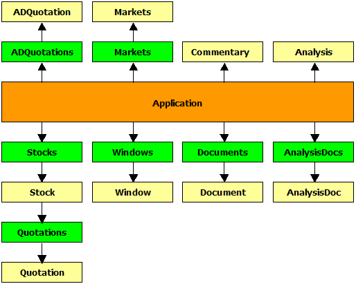

Important note about OLE automation:
OLE automation interface is provided to control AmiBroker from the OUTSIDE process (such as Windows Scripting Host). While it is possible to access Broker.Application and underlying objects from AFL formulas you should be very careful NOT to touch any user interface objects (Documents, Document, Windows, Window, Analysis object) from AFL formula because doing so, you will likely be "Sawing Off the Branch You're Sitting On". Especially things like switching chart tabs from currently running chart formula are totally forbidden. Changing user interface objects via OLE from AFL that is currently running within those user interface parts is a recipe for disaster. You have been warned.
|
AmiBroker object model hierarchy. v5.50 |
|
 |
(1) - Analysis object is obsolete as of 5.50. It is left here for backward compatibility
and accesses Old Automatic Analysis window only.
(2) - AnalysisDoc object and AnalysisDocs collection are new objects introduced
in v5.50 and allow controlling the New Analysis window
Properties:
- Date As Date
- AdvIssues As Long
- AdvVolume As Single
- DecIssues As Long
- DecVolume As Single
- UncIssues As Long
- UncVolume As Single
Description:
ADQuotation class keeps one bar of advance/decline information.
Methods:
- Function Add(ByVal Date As Variant) As Object
- Function Remove(ByVal Date As Variant) As Boolean
Properties:
- Item(ByVal Date As Variant) As Object [r/o] [default]
- Count As Long
Description:
ADQuotations is a collection of ADQuotation objects.
This object is obsolete. It is provided only to maintain compatibility with old code. Analysis object always accesses OLD Automatic Analysis.
Properties:
- Property Filter(ByVal nType As Integer, ByVal pszCategory As String) As Long [r/w]
Methods:
- Sub Backtest([ByVal Type As Variant])
- Sub ClearFilters()
- Sub Edit([ByVal bForceReload As Variant])
- Sub Explore()
- Function Export(ByVal pszFileName As String) As Boolean
- Function LoadFormula(ByVal FileName As String) As Boolean
- Function LoadSettings(ByVal pszFileName As String) As Boolean
- Sub MoveWindow(ByVal Left As Long, ByVal Top As Long, ByVal Width As Long, ByVal Height As Long)
- Sub Optimize([ByVal Type As Variant])
- Function Report(ByVal pszFileName As String) As Boolean
- Function SaveFormula(ByVal pszFileName As String) As Boolean
- Function SaveSettings(ByVal pszFileName As String) As Boolean
- Sub Scan()
- Sub ShowWindow(ByVal nShowCmd As Long)
- Sub SortByColumn(ByVal iColumn As Long, ByVal bAscending As Integer, ByVal bMultiMode As Integer)
Properties:
- RangeMode As Long
- RangeN As Long
- RangeFromDate As Date
- RangeToDate As Date
- ApplyTo As Long
Description:
Analysis object provides programmatic control of the automatic analysis window.
Notes:
Analysis.Backtest( Type = 2 ); - runs a backtest.
Type parameter can be one of the following values:
0 : portfolio backtest/optimize
1 : individual backtest/optimize
2 : old backtest/optimize
IT IS IMPORTANT TO NOTE THAT FOR BACKWARD COMPATIBILITY REASONS, THE DEFAULT BACKTESTER MODE
IS "OLD" BACKTEST. THEREFORE, YOU MUST SPECIFY TYPE = 0 IF YOU WANT TO GET A PORTFOLIO BACKTEST.Analysis.Optimize(Type = 2 ); - runs an optimization.
Type parameter can be one of the following values:
0 : portfolio backtest/optimize
1 : individual backtest/optimize
2 : old backtest/optimize
3 : walk-forward test (AmiBroker version 5.11.0 or higher)Analysis.Report( FileName: String ) - saves the report to the file or displays it if FileName = "".
Analysis.ApplyTo - defines the apply-to mode: 0 - all stocks, 1 - current stock, 2 - use filter
Analysis.RangeMode - defines the range mode: 0 - all quotes, 1 - N last quotes, 2 - N last days, 3 - from-to date
Analysis.RangeN - defines N (number of bars/days to backtest)
Analysis.RangeFromDate - defines "From" date
Analysis.RangeToDate - defines "To" date
Analysis.Filter( nType: short, Category: String ) - sets/retrieves the filter setting
nType argument defines the type of filter: 0 - include, 1 - exclude
Category argument defines filter category:
"index", "favorite", "market", "group", "sector", "index", "watchlist"
AnalysisDoc is a new object introduced in version 5.50. It allows access to New Analysis project documents (.apx extension) and perform multithreaded scans/explorations/backtests/optimizations in the New Analysis window in an asynchronous way. Asynchronous means that the Run() method only starts the process and returns immediately. To wait for completion, you must check the IsBusy flag periodically (such as every second) in your own code.
Properties:
- Property IsBusy As Boolean [r]
Methods:
- Sub Close()
- Function Export(ByVal pszFileName As String, [ByVal WhatToExport As Variant] ) As Long
- Function Run(ByVal Action As Long) As Long
- Sub Abort() (new in 6.20)
Description:
AnalysisDoc object provides programmatic control of the New Analysis document/window.
IsBusy property allows you to check whether the Analysis window is busy performing analysis. You must check this flag periodically if you want to wait for completion. Take care NOT to call this too often, as it will decrease performance. For best results, check it every one second. Also, you need to check this flag if you are not sure whether the Analysis window is busy before trying to call Export() or Run(); otherwise, these calls would fail if analysis is in progress.
Close( ) method closes the Analysis document/window. If there is any operation in progress, it will be terminated. To prevent premature termination, check the IsBusy property.Export( pszFileName, whatToExport) method allows exporting the analysis result list to either an .HTML or .CSV file. Returns 1 on success (successful export) or 0 on failure (for example, if the analysis window is busy). WhatToExport decides what data should be exported: whatToExport = 0 - exports the result list (the default behavior when this parameter is not provided); whatToExport = 1 - exports the walk-forward tab.
Run( Action ) method allows you to run asynchronous scans, explorations, backtests, and optimizations.
Action parameter can be one of the following values:
0 : Scan
1 : Exploration
2 : Portfolio Backtest
3 : Individual Backtest
4 : Portfolio Optimization
5 : Individual Optimization (supported starting from v5.69)
6 : Walk Forward Test
It is important to understand that the Run method just starts the process and returns immediately. It does NOT wait for completion.
To wait for completion, you need to query the IsBusy flag periodically (such as every one second).
Run() returns 1 on success (successfully starting the process) or 0 on failure (for example, if the analysis window is busy)
The procedure to run an automated backtest involves opening a previously saved Analysis project (it includes all settings that are necessary to perform any action), calling Run() and waiting for completion.
Since you can currently have multiple analysis projects running, there is an AnalysisDocs collection that represents all open Analysis documents and allows you to open previously saved files (that contain the formula, settings and everything needed to run).The new AnalysisDoc object does not allow you to read/write settings for this purpose. You are not supposed to manipulate the UI while the New Analysis window is running. The correct way of using the New Analysis window is to open an existing project file and run. If you want to modify the settings, you should write/modify the existing project file. The analysis project file (.apx extension) is a human-readable, self-explanatory XML-format file that can be written/edited/modified from any language or any text editor.
The following JScript example
a) opens an analysis project from the C:\Analysis1.apx file
b) starts backtest (asynchronously)
c) waits for completion
d) exports results
e) closes analysis document
AB = new ActiveXObject( "Broker.Application" ); // creates AmiBroker object
try
{
NewA = AB.AnalysisDocs.Open( "C:\\analysis1.apx" ); // opens previously saved analysis project file
// NewA represents the instance of New Analysis document/window
if ( NewA )
{
NewA.Run( 2 ); // start backtest asynchronously
while ( NewA.IsBusy ) WScript.Sleep( 500 ); // check IsBusy every 0.5 second
NewA.Export( "test.html" ); // export result list to HTML file
WScript.echo( "Completed" );
NewA.Close(); // close new Analysis
}
}
catch ( err )
{
WScript.echo( "Exception: " + err.message ); // display error that may occur
}
Abort( ) method will abort any running Analysis scan, exploration, or backtest.
AnalysisDocs is a new object introduced in version 5.50. It is a collection of AnalysisDoc objects. It allows adding new Analysis documents, opening existing analysis projects, and iterating through analysis objects.
Methods:
- Function Add() As Object
- Sub Close()
- Function Open(ByVal FileName As String) As Object
Properties:
- Item(ByVal Index As Long) As Object [r/o] [default]
- Count As Long
- Application As Object
- Parent As Object
Description:
AnalysisDocs is a collection of AnalysisDoc objects.
Add method creates a new Analysis document/window. The method returns an AnalysisDoc object.Close method closes all open Analysis documents/windows. If any analysis project is running, it will be terminated immediately.
Open method allows opening an existing Analysis project file (.apx). The method returns an AnalysisDoc object.
Item property allows access to the Index-th element of the collection. The property returns an AnalysisDoc object.
Count property gives the number of open analysis documents.
Both Application and Parent properties point to the Broker.Application object.
For example usage, see the AnalysisDoc object description.
Methods:
- Function Import(ByVal Type As Integer, ByVal FileName As String, [ByVal DefFileName As Variant]) As Long
- Function LoadDatabase(ByVal Path As String) As Boolean
- Function LoadLayout(ByVal pszFileName As String) As Boolean
- Sub LoadWatchlists()
- Function Log(ByVal Action As Integer) As Long
- Sub Quit()
- Sub RefreshAll()
- Sub SaveDatabase()
- Function SaveLayout(ByVal pszFileName As String) As Boolean
Properties:
- ActiveDocument As Object
- Stocks As Object
- Version As String
- Documents As Object
- Markets As Object
- DatabasePath As String
- Analysis As Object
- Commentary As Object
- ActiveWindow As Object
- Visible As Integer
Description:
Application object is the main OLE automation object for AmiBroker. You have to create it prior to accessing any other objects. To create an Application object, use the following code:
JScript:
AB = new ActiveXObject("Broker.Application");
VB/VBScript:
AB = CreateObject("Broker.Application")
AFL:
AB = CreateObject("Broker.Application");
Methods:
- Sub Activate()
- Sub Close()
- Function ExportImage(ByVal FileName As String, [ByVal Width As Variant], [ByVal Height As Variant], [ByVal Depth As Variant]) As Boolean
- Function LoadTemplate(ByVal lpszFileName As String) As Boolean
- Function SaveTemplate(ByVal lpszFileName As String) As Boolean
- Function ZoomToRange(ByVal From As Variant, ByVal To As Variant) As Boolean
Properties:
- SelectedTab As Long
- Document As Object
Description:
The Window object provides programmatic control over a charting window.
Methods:
- Function Add() As Object
Properties:
- Item(ByVal Index As Long) As Object [r/o] [default]
- Count As Long
Description:
Windows is a collection of Window objects.
Methods:
- Sub Apply()
- Sub Close()
- Function LoadFormula(ByVal pszFileName As String) As Boolean
- Function Save(ByVal pszFileName As String) As Boolean
- Function SaveFormula(ByVal pszFileName As String) As Boolean
Description:
The Commentary object provides programmatic control over the guru commentary window.
Methods:
- Sub Activate()
- Sub Close()
- Sub ShowMessage(ByVal Text As String)
Properties:
- Application As Object
- Parent As Object
- Name As String
- ActiveWindow As Object
- Windows As Object
- Interval As Integer
Description:
The Document object represents an active document (of 'chart' type). In document-view architecture, each document can have multiple windows (views) connected. The Name property defines the currently selected symbol for the document.
Name is a ticker symbol; Interval is a chart interval in seconds.
Methods:
- Function Add() As Object
- Sub Close()
- Function Open(ByVal Ticker As String) As Object
Properties:
- Item(ByVal Index As Long) As Object [r/o] [default]
- Count As Long
- Application As Object
- Parent As Object
Description:
Documents is a collection of Document objects.
Properties:
- Name As String
- ADQuotations As Object
Description:
Market represents a market category and its related data (i.e., per-market advance/decline information).
Properties:
- Item(ByVal Index As Integer) As Object [r/o] [default]
- Count As Integer
Description:
Markets is a collection of Market objects.
Properties:
- Date As Date
- Close As Single
- Open As Single
- High As Single
- Low As Single
- Volume As Single
- OpenInt As Single
Description:
The Quotation class represents one bar of price data.
Methods:
- Function Add(ByVal Date As Date) As Object
- Function Adjust(ByVal FieldList As String, ByVal Multiplier As Float, ByVal Offset as Float, ByVal DateTime as Date, ByVal Before as Boolean) As Long - new in version 6.40.2
The function performs price adjustment on quotations; FieldList defines which fields will be adjusted, such as "OHLC". The value of each field mentioned in the FieldList gets multiplied by Multiplier and has the Offset value added: new_value = old_value * Multiplier + Offset.
Quotes affected will be Before (=True) or after the specified DateTime.- Function Remove(ByVal Item As Variant) As Boolean
- Function Retrieve(ByVal Count As Long, ByRef Date As Variant, ByRef Open As Variant, ByRef High As Variant, ByRef Low As Variant, ByRef Close As Variant, ByRef Volume As Variant, ByRef OpenInt As Variant) As Long
Properties:
- Item(ByVal Item As Variant) As Object [r/o] [default]
- Count As Long
Description:
Quotations is a collection of Quotation objects. It represents all quotations available for a given symbol. The Quotations collection is available as a property of a Stock object.
Properties:
- Ticker As String
- Quotations As Object
- FullName As String
- Index As Boolean
- Favourite As Boolean
- Continuous As Boolean
- MarketID As Long
- GroupID As Long
- Beta As Single
- SharesOut As Single
- BookValuePerShare As Single
- SharesFloat As Single
- Address As String
- WebID As String
- Alias As String
- IsDirty As Boolean
- IndustryID As Long
- WatchListBits As Long
- DataSource As Long
- DataLocalMode As Long
- PointValue As Single
- MarginDeposit As Single
- RoundLotSize As Single
- TickSize As Single
- WatchListBits2 As Long
- Currency As String
- LastSplitFactor As String
- LastSplitDate As Date
- DividendPerShare As Single
- DividendPayDate As Date
- ExDividendDate As Date
- PEGRatio As Single
- ProfitMargin As Single
- OperatingMargin As Single
- OneYearTargetPrice As Single
- ReturnOnAssets As Single
- ReturnOnEquity As Single
- QtrlyRevenueGrowth As Single
- GrossProfitPerShare As Single
- SalesPerShare As Single
- EBITDAPerShare As Single
- QtrlyEarningsGrowth As Single
- InsiderHoldPercent As Single
- InstitutionHoldPercent As Single
- SharesShort As Single
- SharesShortPrevMonth As Single
- ForwardDividendPerShare As Single
- ForwardEPS As Single
- EPS As Single
- EPSEstCurrentYear As Single
- EPSEstNextYear As Single
- EPSEstNextQuarter As Single
- OperatingCashFlow As Single
- LeveredFreeCashFlow As Single
Description:
Stock class represents single-symbol data. For historical reasons, the name of the object is Stock, but it can hold any kind of instrument (including futures, forex, etc.).
Methods:
- Function Add(ByVal Ticker As String) As Object
- Function GetTickerList(ByVal nType As Long) As String
- Function Remove(ByVal Item As Variant) As Boolean
Properties:
- Item(ByVal Item As Variant) As Object [r/o] [default]
- Count As Long
Description:
Stocks is a collection of Stock objects. It is available as a property of the Application object.
Notes:
Stock.WatchListBits (long) - each bit 0..31 represents assignment to one of 32 watch lists. To add a stock to the nth watch list, write (JScript example):
Stock.WatchListBits |= 1 << nth;
Stock.WatchListBits2 (long) - each bit 0..31 represents assignment to one of watch lists numbered from 32-63. To add a stock to the nth watch list, write (JScript example):
Stock.WatchListBits2 |= 1 << ( nth - 32 );
Stock.DataSource ( 0 - default, 1 - local only )
Stock.DataLocalMode ( 0 - default, 1 - store locally, 2 - don't store locally).
Example 1: Running a simple backtest
AB = new ActiveXObject( "Broker.Application" ); //
creates AmiBroker object
try
{
NewA = AB.AnalysisDocs.Open( "C:\\analysis1.apx" ); //
opens previously saved analysis project file
// NewA represents
the instance of New Analysis document/window
if (
NewA )
{
NewA.Run( 2 ); //
start backtest asynchronously
while (
NewA.IsBusy ) WScript.Sleep( 500 ); //
check IsBusy every 0.5 second
NewA.Export( "test.html" ); //
export result list to HTML file
WScript.echo( "Completed" );
NewA.Close(); //
close new Analysis
}
}
catch ( err )
{
WScript.echo( "Exception: " +
err.message ); // display error that may occur
}
Example 2: Executing commentary
AB = new ActiveXObject("Broker.Application");
AB.Commentary.LoadFormula("C:\\Program Files\\AmiBroker\\AFL\\MACD_c.afl");
AB.Commentary.Apply();
AB.Commentary.Save("Test.txt");
AB.Commentary.SaveFormula("MACDTest.afl");
//AB.Commentary.Close();